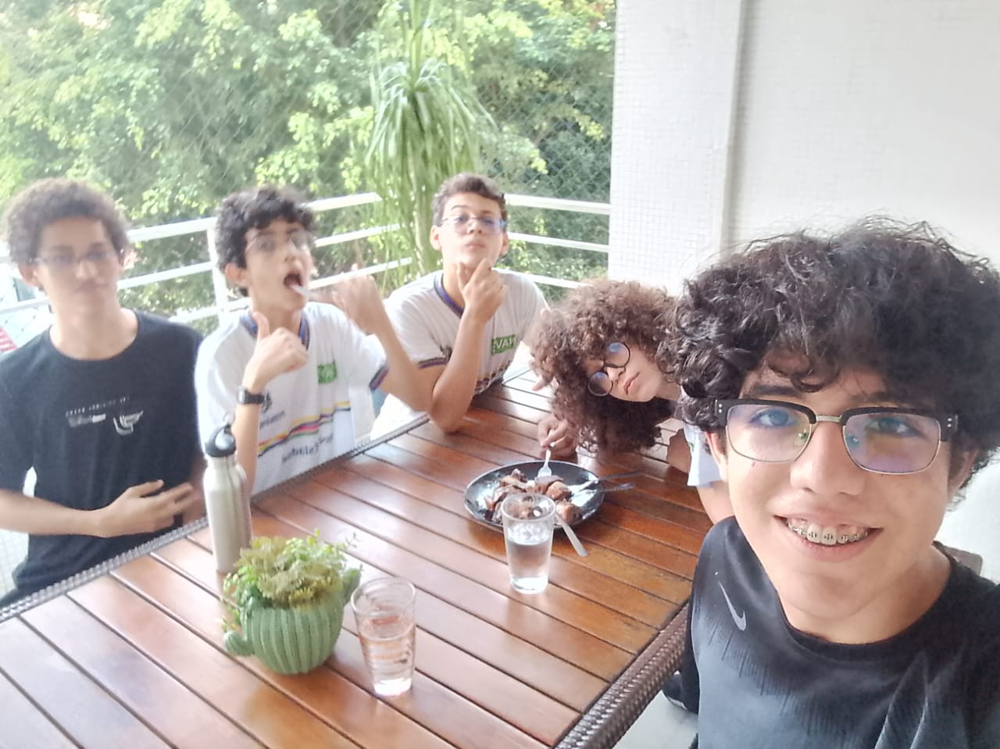

×

Oie! Se você chegou até aqui, provavelmente faz parte do Time 8 ou conhece o nosso trabalho. Este secret site existe por um motivo simples: agradecer — do jeito certo — esse time absurdo do qual eu tenho orgulho de fazer parte.
Pode soar brega, mas a verdade é direta: eu amo demais esses caras. Sem exagero nenhum, é o melhor time que já fiz parte na vida.
Agradeço a Samuel pelas figurinhas, memes, nigga, conversas e risadas, tu é massa dms, cara!
Agradeço a Artur pelos memes, pela mãe, pelas conversas e pela criatividade, tu é incrível, bixo!
Agradeço a Cabum (Gabriel) pelas conversas, memes, eventos, brincadeiras e todo acolhimento, tu é surreal, manin!
Agradeço a Matheus pelas risadas, conversas, brincadeiras, momentos, acolhimento e fotos, tu é fera dms, irmão!
Vocês são realmente especiais e estarão no meu coração pra sempre. Sem mentira nenhuma: eu nunca esqueço ninguém, principalmente quando é alguém que eu crio afeto.
O Time 8 não é só time. É um conjunto de histórias e aventuras patacumbásticas 🚀
